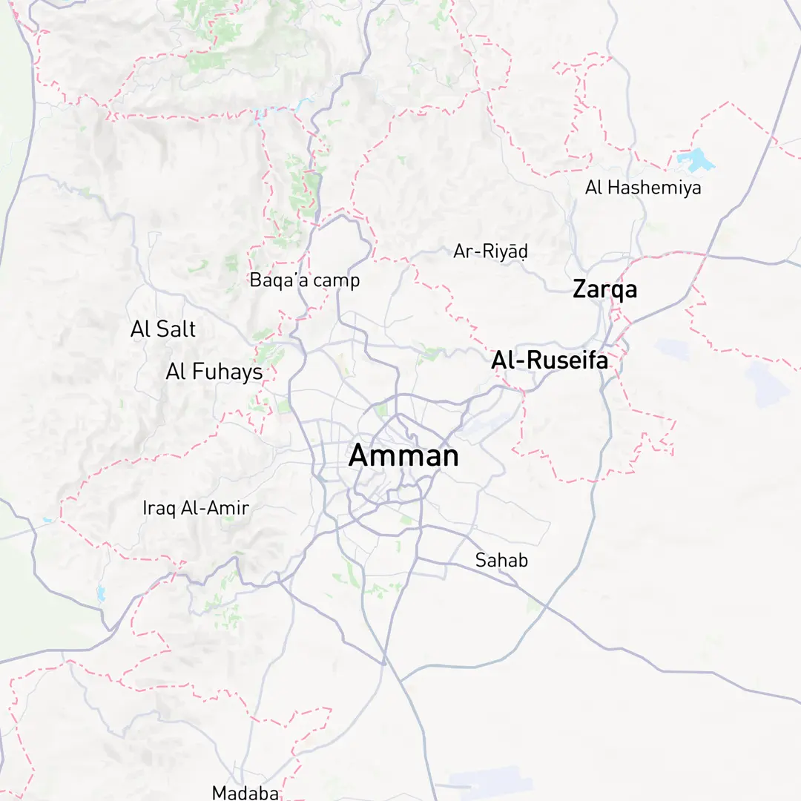
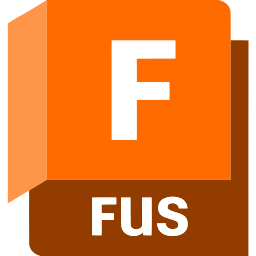

Tech Stack
Tech stack I mainly use
Focused on Python, computer vision, agentic AI, workflow automation, and reliable quality engineering.
Engineering Intelligence, Ensuring Quality
I'm an AI Engineer and Quality Assurance Specialist based in Amman, Jordan. I combine technical expertise in artificial intelligence with rigorous quality assurance practices to build reliable, intelligent systems.
My journey spans machine learning, deep learning, and agentic AI workflows, complemented by hands-on QA experience in manual testing, API validation, and AI-assisted quality initiatives. I'm passionate about creating solutions that are not only innovative but also robust and production-ready.
Focused on Python, computer vision, agentic AI, workflow automation, and reliable quality engineering.


Fusion 360 3D3D Printing CNCCNC LCLaser CuttingSamsung Innovation Campus (SIC)
Correlation One - USAID
Focused tracks in modern AI engineering foundations.
Data, analytics, and reporting fundamentals.
Have a question or want to work together? Reach out directly. You can copy contact details instantly.